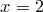
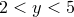

If several data points are supplied to the boxes or wboxes plot styles at a common  -co-ordinate, then the bars are stacked one above another into a stacked barchart. Consider the following data file:
-co-ordinate, then the bars are stacked one above another into a stacked barchart. Consider the following data file:
1 1 2 2 2 3 3 4
The second bar at  would be placed on top of the first, spanning the range , and having the same width as the first. If plot colours are being automatically selected from the palette, then a different palette colour is used to plot the upper bar.